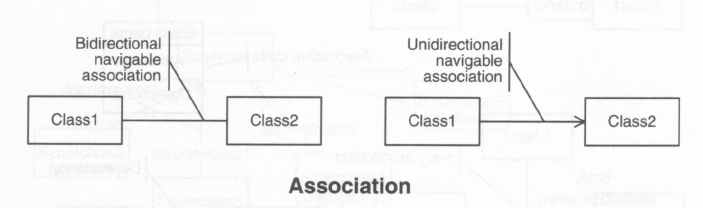
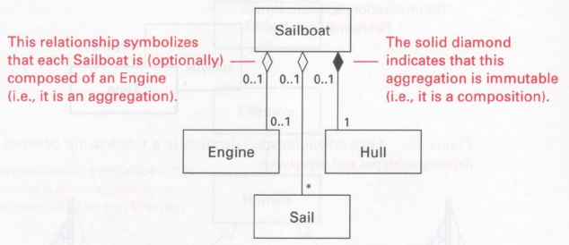

Torna alla pagina di Ingegneria del Software
:: Ingegneria del Software - Appunti del 4 Aprile 2009 ::
Il diagramma delle classi mi permette anche di specificare quali relazioni intercorrano tra le varie classi. La faccenda non è di poca rilevanza, perché influenza moltissimo il design e la conseguente implementazione del nostro software.
Innanzitutto, possiamo dire che una classe rappresenta le proprietà che un oggetto (inteso in senso generico e non programmatorio) deve avere per poter dire di appartenere ad un certo insieme.
Le relazioni tra classi sono di tre tipi:
L'ereditarietà è una relazione molto stretta tra classi.
Una classe identifica un tipo del mio linguaggio di programmazione, come un int o un float. Dire che una classe eredita da un'altra vuol dire che la classe ereditante è un sottotipo della classe da cui eredita.
Se la classe è il criterio per identificare i membri di un insieme, allora la sottoclasse è il criterio per identificare sottinsiemi di quell'insieme. Se abbiamo l'insieme degli Animali e il sottinsieme dei Gatti, un oggetto del sottinsieme dei Gatti È anche un Animale, ma non è detto che un qualsiasi Animale sia anche un gatto.
La cosa importante è che una sottoclasse eredita dal padre l'interfaccia pubblica e, a seconda delle possibilità offerte da un dato linguaggio, anche l'implementazione della classe padre. Per questo bisogna fare molta attenzione quando si utilizza la relazione di ereditarietà.
In UML si segna in questo modo:
Un altro punto di vista per affrontare l'ereditarietà è dire che un sottotipo è una specializzazione del supertipo (o superclasse, basta ci sia dentro super). Il Gatto è una specializzazione dell'Animale, perché oltre a fare tutte le cose "standard" che un animale deve fare, può anche fare cose che gli altri animali non possono fare, per esempio fare le fusa.
A livello di implementazione, quello che una classe può fare è rappresentato dai suoi metodi. Se l'animale ha i metodi mangia() e bevi(), il Gatto avrà sicuramente i metodi mangia() e bevi(), ma anche il metodo pruprurra().
L'ereditarietà può andare avanti e non fermarsi al primo livello: posso avere intere gerarchie di tipi e sottotipi etc. Inoltre, a seconda del linguaggio di programmazione, posso avere un tipo che eredita da più di un padre (magie dell'ingegneria genetica). Ma questa è un'altra faccenda, permessa in C++ ma non in Java, e da usare con molta cautela.
In Java, per esempio, TUTTI gli oggetti sono sottotipi della classe primigenia che fantasiosamente è stata chiamata Object. Pertanto, se da qualche parte dichiaro un Array di Object, posso infilarci tutto quello che voglio:)
Come dicevamo sopra, l'ereditarietà è un legame molto molto forte tra due classi (e tra i relativi oggetti istanze di quelle classi). Qualsiasi modifica faccio alla classe padre, avrà delle ripercussioni su tutta la sua progenie, il che è potenzialmente dannoso!
Il software engineer tende, al contrario, ad avere componenti il più possibile indipendenti, così che le modifiche ad uno non siano necessariamente delle catastrofi per il resto dell'ambiente. Per questo motivo preferiscono far sì che classi diverse si chiamino, piuttosto che siano legate dall'ereditarietà.
L'associazione è una relazione molto debole, che dice solamente che un oggetto istanza di una certa classe ha una non meglio precisata nozione dell'esistenza di un oggetto appartenente ad un'altra classe.
Una relazione deve avere come soggetti due individui, cioè due oggetti. In un'associazione tuttavia non è detto che ciascun oggetto debba essere a conoscenza dell'esistenza dell'altro oggetto: l'Amante della Moglie sa dell'esistenza del Marito, ma il Marito non sa niente dell'esistenza dell'Amante.
UML permette di distinguere quindi il caso in cui entrambi sono a conoscenza l'uno dell'altro, e il caso in cui solo uno è a conoscenza dell'altro. Ecco come: 
Nel disegno c'è scritto navigable. È il concetto di cui abbiamo appena parlato: se posso andare da A verso B, vuol dire che posso "navigare" da A verso B. Allo stesso modo, una linea semplice tra due classi vuol dire che ognuna è consapevole dell'esistenza dell'altra, e quindi posso partire da Class1 e arrivare a Class2, ma anche partire da Class2 ed arrivare a Class1. Il canale che connette Class1 e Class2 è navigabile in due direzioni.
A destra invece c'è un'associazione unidirezionale: in questo caso Class1 è a conoscenza di Class2, ma Class2 non sa niente di Class1. Posso navigare quel canale solo in una direzione.
Attenzione: se in UML segno l'esistenza di un'associazione, sto anche contemplando la possibilità che l'associazione rimanga insoddisfatta. Ovvero, dire che Class1 è associata a Class2 in realtà vuol dire che Class1 PUÒ essere associata a Class2, ma anche no.
L'aggregazione è una relazione molto stretta tra due classi. Il concetto che descrive è quello che un certo oggetto è PARTE DI un altro oggetto.
Nell'associazione mi limito a dire che una classe ha nozione dell'esistenza di un'altra classe. Qui invece mi spingo oltre e dico che una classe è composta da una o più altre classi.
Questa composizione può essere obbligatoria oppure opzionale. Per spiegare la differenza, facciamo un esempio. Ho l'Essere Umano, ho la Testa e ho la Gamba. Un Essere Umano per essere completo deve avere sia la Testa che la Gamba, ma con una differenza: senza la Gamba, l'Essere Umano vive lo stesso. Senza la Testa, l'Essere Umano non può nemmeno esistere.
Nel caso della Testa, ho un'aggregazione immutabile, mentre nel caso della gamba l'aggregazione è opzionale. Le aggregazioni immutabili si segnano con una losanga nera, mentre quelle opzionali con una losanga vuota. 
Stiamo parlando del diagramma delle classi, e quindi ci si aspetta che le relazioni abbiano come soggetti le classi stesse. E invece no! La classe è solo la dichiarazione di un tipo, mentre le istanze di questa classe vengono chiamate oggetti, e saranno gli oggetti ad avere vera "vita" all'interno del software, a essere relazionati e composti e così via.
Nel caso dell'ultimo disegno che abbiamo visto, quello con Sailboat, Engine, Sail, Hull, ci sono dei numerini accanto alle frecce di aggregazioni. Essi stanno ad indicare la cardinalità dell'aggregazione stessa.
Per esempio, la freccia losangata che collega Sailboat ad Engine ha, su entrambi i lati, la dicitura 0..1:
Prendiamo invece la freccia losangata che collega Sailboat a Sail. Sul lato di Sailboat ha la dicitura 0..1, mentre sul lato di Sail ha la dicitura *:
Prendiamo ora l'ultima freccia losangata, tra Sailboat e Hull. Dal lato di Sailboat la dicitura è 0...1, con losanga nera. Dal lato di Hull la dicitura è 1. Avere la losanga nera significa che l'aggregazione è immutabile, ovvero, senza Hull la Sailboat non esiste nemmeno. Posso non avere nessun Hull, ma allora non esisto nemmeno.
Che cosa c'entra questo con la faccenda di cui parlavo prima, cioè che saranno gli Oggetti e non le Classi ad essere i veri soggetti delle relazioni? Ora lo spiego. Se ci pensiamo un attimo, c'è qualcosa di dissonante in questi disegni. Se esiste UNA classe chiamata Sailboat, UNA classe chiamata Engine, e UNA classe chiamata Sail, com'è possibile avere una relazione in cui compaia un numero imprecisato di Sail? Ovviamente non è così: la molteplicità della relazione mi dice quante istanze di Sail possono essere aggregate a Sailboat, e quindi sta parlando di Oggetti e non di Classi.
La molteplicità di una relazione può anche rappresentare un vincolo. Ad esempio, se su un capo di una linea metto 2..10, vuol dire che posso avere nozione di un numero che va da 2 a 10 istanze di quella particolare classe. Sto quindi esprimendo un vincolo sulla molteplicità.
Ecco, le relazioni ternarie, quaternarie etc. sono il male e vanno evitate. In tutti i linguaggi di programmazione, visto che le relazioni si esprimono tramite un attributo oppure coppie di attributi, tutto ciò che trascende l'1 e il 2 non va bene:)
UML mi permette di avere questo tipo di relazioni ternarie, ma per i motivi di cui parlavo sopra vanno evitate, altrimenti implementarle diventa un macello non più finito.
Le classi vengono utili perché modellano concetti ed entità del mondo reale. Fin qui tutto bene, però c'è da pensare anche a questa faccenda: è ragionevole pensare che ogni volta che faccio riferimento ad un certo concetto o ad una certa entità, ovvero ad una certa classe, io debba per forza di cose istanziare una nuova classe nel mio software?
Istanziare vuol dire portare via tempo e memoria: si tratta di un'operazione lenta e costosa, che in genere va fatta il minor numero di volte possibile.
Questo significa che al momento dell'implementazione occorre porsi qualche domanda, e scoprire se vale la pena mantenere la distinzione concettuale che si è portata avanti fino ad ora (1 concetto = 1 classe), oppure eliminarla per lasciare posto a qualcosa di più efficiente. Questo si chiama passare alla prospettiva delle interfacce.
Nei diagrammi posso mantenere la distinzione concettuale, che è molto chiara ed aiuta la comprensione. Ma nella realtà posso invece saltarla per motivi di efficienza.
Nel progetto che presenteremo all'esame, se si mettono le ragioni per un tale cambio di prospettiva il professore ne sarà felice, e noi con lui.
Come già abbiamo visto, le relazioni tra classi vengono sì specificate in UML tramite una notazione standard ed uniforme, ma la loro implementazione in un linguaggio di programmazione non lo è affatto. A seconda del linguaggio con cui si andrà a scrivere codice, verranno utilizzati costrutti diversi.
Qui vogliamo vedere come le relazioni di composizione, aggregazione ed associazione vengono realizzate in Java.
La composizione è una relazione in cui una classe è parte integrante di un altra. In Java, un riferimento ad un'altra classe lo si ottiene sempre tramite un attributo della classe stessa. Tuttavia, avere un attributo del tipo della classe desiderata non basta a far sì che quella classe venga effettivamente istanziata: occorre farlo in modo esplicito nel costruttore della classe che la contiene.
La frase è convoluta, ma vediamo un esempio. Abbiamo una classe Contenuto e una classe Contenitore, ed il Contenuto va composto in Contenitore.
public class Contenuto {
public Contenuto(String nome) {
// Costruttore del contenuto
}
}
public class Contenitore {
private Contenuto mioContenuto;
public Contenitore(String nome) {
this.Contenuto = new Contenuto("Tu sei mio!");
}
}
Come vedete, la classe Contenitore ha un attributo di tipo Contenuto. La relazione di composizione tra le classi mi obbliga a far sì che nel costruttore della classe Contenitore si istanzi la classe Contenuto.
Quando Java chiamerà il distruttore automatico della classe Contenitore (a differenza del C++, il distruttore non lo si scrive esplicitamente perché non ce n'è bisogno), la JVM penserà anche a distruggere l'istanza di Contenuto a cui si riferisce l'attributo mioContenuto.
L'aggregazione è invece una relazione un po' meno forte, in cui dal Contenitore devo avere accesso ad un Contenuto, ma non in modo obbligatorio.
Come nel caso della composizione, avrò ancora, in Contenitore, un attributo di tipo Contenuto, ma a differenza della composizione non lo istanzio nel costruttore, perché le loro vite sono sì legate, ma non così tanto da nascere e vivere insieme.
L'attributo di tipo Contenuto rimane pendente, o anche dangling, e potrò riempirlo o modificarlo a runtime tramite opportuni metodi. Qui ne diamo un esempio:
public class Contenitore {
private Contenuto mioContenuto;
public Contenitore(String nome) {
// Niente costruttore di mioContenuto
}
public void setContenuto(Contenuto c) {
// In questo metodo posso assegnare il riferimento pendente
// ad un'istanza di Contenuto passata come parametro
this.mioContenuto = c;
}
public Contenuto getMioContenuto() {
// Siamo bravi e abbiamo anche un metodo per
// recuperare il Contenuto vigente
return this.mioContenuto;
}
}
Come vedete, al momento dell'istanziazione di Contenitore l'attributo mioContenuto rimane pendente. Poi, durante la vita dell'oggetto, potrò quante volte voglio assegnare un nuovo Contenuto al Contenitore tramite il metodo setContenuto(Contenuto c).
Con ogni probabilità, gli altri eventuali metodi della classe Contenitore dovranno essere scritti in modo da tenere conto dell'eventualità che mioContenuto sia pendente. Ad esempio, potrei avere un frammento di codice così fatto:
...
int valore;
if (this.mioContenuto != null) {
valore = mioContenuto.unQualsiasiMetodo();
} else {
valore = 100;
}
...
Per controllare se l'attributo è pendente o no, controllo se è null.
L'associazione è un legame ancora più debole. Qui utilizzare la dicitura Contenitore e Contenuto è piuttosto fuorviante, perché in realtà le classi hanno vita molto molto separata. Tuttavia la manteniamo per coerenza con gli esempi precedenti.
Dal momento che Contenitore ha solo una vaga nozione della classe cui è associata, non possiamo avere un riferimento diretto al Contenuto. Dobbiamo però, all'occorrenza, poter risalire a questo Contenuto, anche se non ci interessa minimamente CHI esso sia.
Per ottenere ciò, si utilizza una classe intermedia, a cui Contenitore chiederà: "Ascolta, dammi un Contenuto che devo fargli fare alcune cose".
La classe intermedia, a prescindere dal modo con cui essa saprà recuperare un Contenuto, avrà sicuramente un metodo così:
public class Intermediario {
...
public Contenuto dammiUnContenuto() {
return ilContenutoCheVoglioIo;
}
...
}
E Contenitore farà appello all'Intermediario ogni qualvolta desidererà avere a che fare con un Contenuto. Ovviamente, dovrà sapere a QUALE intermediario fare appello:
public class Contenitore {
private Intermediario mioIntermediario;
...
public void faiQualcosa() {
Contenuto c = mioIntermediario.dammiUnContenuto();
...
...
}
}
Notiamo che alla stessa istanza di Intermediario possono fare riferimento anche più classi Contenitore, così che diversi oggetti possano avere a che fare con un certo Contenuto in modo indipendente.
... il professore sarà contento se noi, dopo aver tracciato il diagramma delle classi UML, riusciremo anche a fornire non un'implementazione completa del software, ma un'implementazione funzionante delle varie relazioni tra classi. Se scegliamo di usare Java come linguaggio di riferimento, allora il professore vorrà vedere degli abbozzi di classi Java che realizzino nei modi qui sopra descritti le relazioni tra le varie classi.